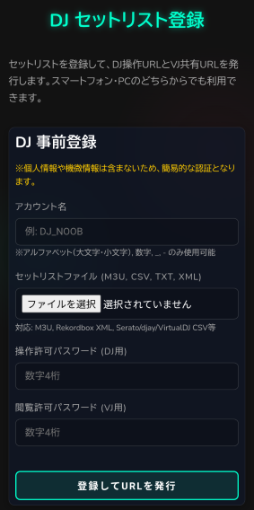
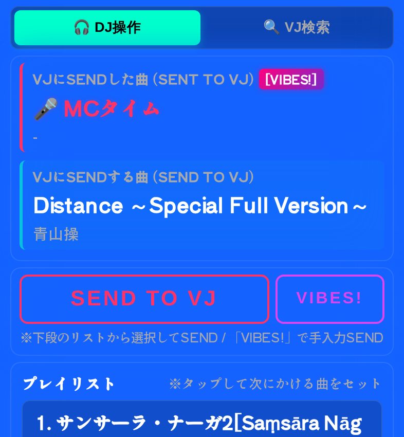
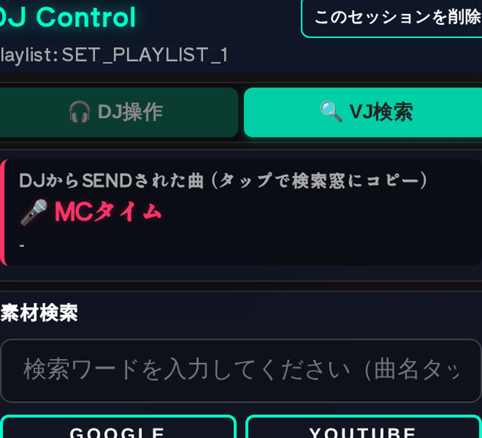
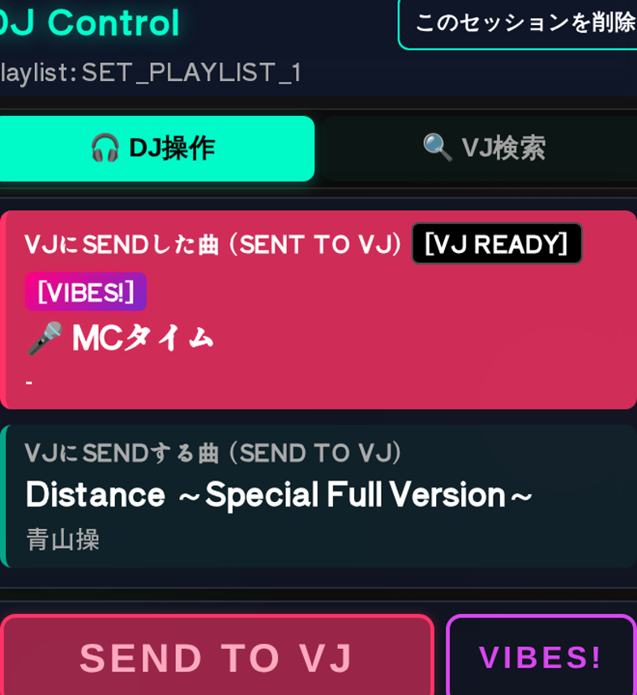

DJ向け 機能・操作説明書
プレイリストの曲情報をVJへ送り、素材の準備状況を受け取るための現場向けガイドです。スマートフォンの片手操作を前提に、登録から送信までを順番に説明します。
1事前登録する
トップページの登録フォームで、アカウント名とプレイリスト名を入力します。DJ用とVJ用の4桁パスワードをそれぞれ設定し、プレイリストファイルを選択してください。
M3U / M3U8 CSV XML TXT
Rekordbox、Serato、djay、VirtualDJなどから書き出したファイルを利用できます。
ファイルを選ぶとプレビューが表示されます。曲名とアーティスト名が正しく見えていることを確認してから、登録ボタンを押します。

2VJと連携する
登録が完了すると、DJ用URLとVJ用URLが発行されます。DJ用URLは自分で開き、VJ用URLはVJへ共有します。
- VJからロビーコードを受け取ります。
- 登録完了画面のロビーコード欄に10文字のコードを入力します。
- VJロビーへ送信を押します。
VJ側のロビーにセッション名が表示されたら連携完了です。URLやパスワードは、必要な相手にだけ共有してください。

3DJ操作画面を使う
ログイン後の画面は、上から「VJにSENDした曲」「VJにSENDする曲」、送信ボタン、プレイリストの順です。現在の画面では、不要な「次にかける曲」専用表示はありません。
- プレイリストの曲をタップして、VJにSENDする曲へセットします。
- 選択内容を確認します。
- SEND TO VJを押します。
プレイリストの曲名・アーティスト名は折り返さず、長い場合は表示領域内を横スクロールして確認します。

4VIBES!を送る
プレイリスト外の割込み曲、MC、ゲスト、機器調整などは VIBES! から手入力で送信します。
- VIBES!を押します。
- 必須の「曲名 / メッセージ」と、任意の「アーティスト名」を入力します。
- MC、Vibes Track、調整中、GUESTのクイックプリセットも利用できます。
- SEND TO VJ (VIBES!)を押します。
VJ側では [VIBES!] バッジ付きの手入力情報として表示されます。

5VJのREADYを確認する
VJが素材を準備して READY を押すと、DJ画面の「VJにSENDした曲」が強調され、[VJ READY] バッジが表示されます。
SENDやREADYの通知時は画面全体が短時間フラッシュします。通知を見逃しても、送信済み曲の表示とバッジで状態を確認できます。

6VJ検索タブを使う
🔍 VJ検索タブでは、DJからSENDされた曲のタイトルまたはアーティスト名をタップして検索欄へコピーできます。検索欄は直接編集も可能です。
4つの検索ボタンは2×2配置で表示され、検索結果は別タブで開きます。

7セッションを削除・復帰する
セッションを終了する場合は、DJ画面ヘッダー右上の このセッションを削除 を使います。サーバー上のセッション、プレイリスト、ロビー参照が削除されるため、開催中は押さないでください。
同じブラウザではセッションIDが8時間以内保存され、URLを失ってもパスワード再入力で復帰できます。パスワードや認証トークンは保存されません。

8困ったとき
- 曲が届かない: DJ用URL、VJ用URL、パスワード、通信状態を確認します。
- ロビーに出ない: VJから受け取った10文字のコードを確認し、登録完了画面から再送します。
- 長い曲名が見えない: 曲名・アーティスト欄を左右に手動スクロールします。
- 検索できない: 曲名またはアーティスト名をタップして検索欄へコピーし、ブラウザのポップアップ許可も確認します。
- セッションを消してしまった: 削除後の復元はできないため、プレイリストを選び直して再登録します。
+DJとVJを兼任する（VDJ）
VDJとして参加する場合は、VJロビーを先に作成します。VJロビーのコードを登録ページへ引き継げるため、入力ミスを減らせます。
- VJロビーを開き、ロビーコードを作成します。
- ロビー画面の DJとしても参加する（登録へ） を押します。
- プレイリストを登録し、登録完了画面のコードを確認して送信します。
- 発行されたDJ操作URLを開き、DJ画面のVJ検索タブで素材検索を行います。
- VJ操作URLも別タブまたは別端末で開き、素材準備後にREADYを送信します。
DJ・VJ・VDJともスマートフォンとPCの両方に対応します。VDJで2画面を同時操作する場合は、PCや複数端末が便利です。